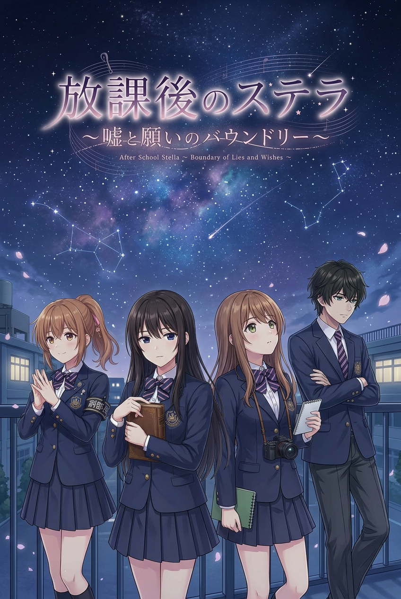
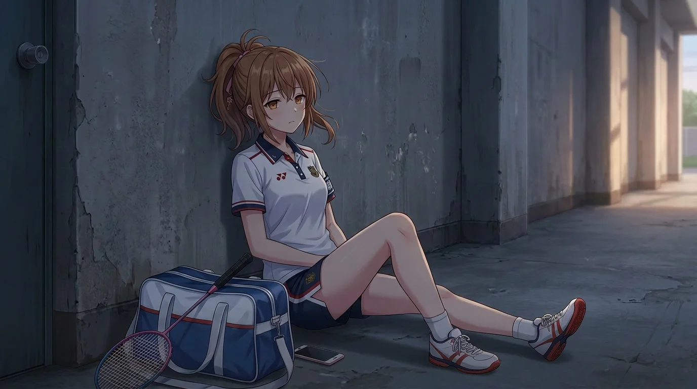
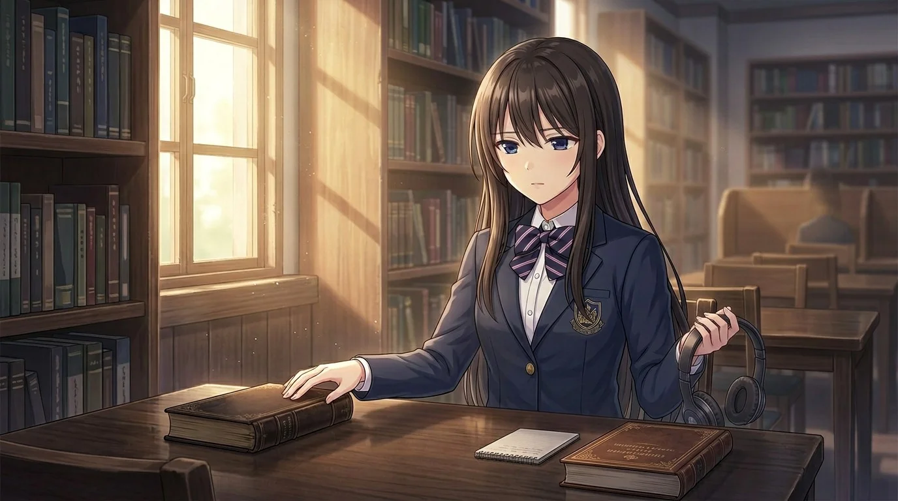
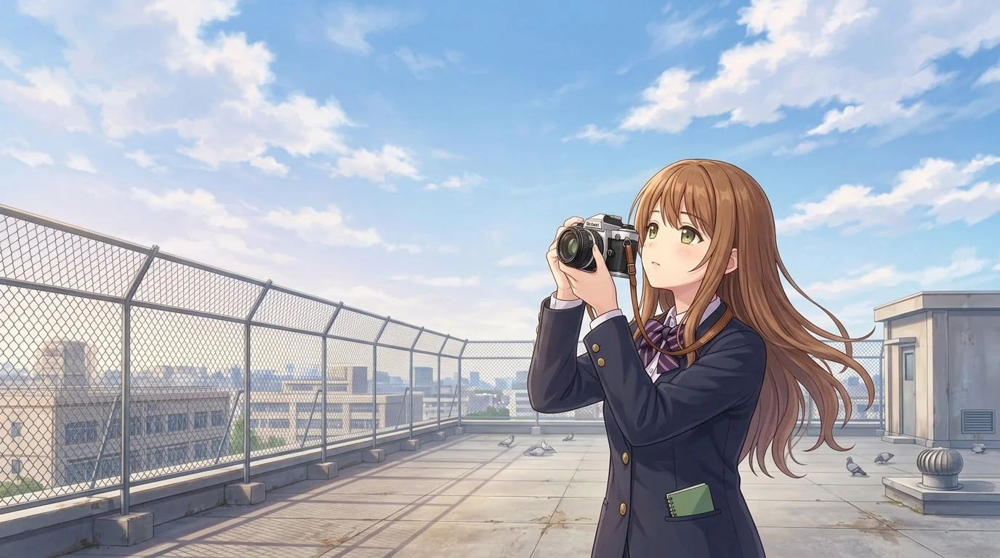

物語を、育てる。
プロットやセリフをAIと練り、人物らしい言葉へ書き直す。選択肢の先にある気持ちまで、一つずつ見直しました。
STORY & DIALOGUEONE CREATOR, WITH AI.
つくりたい物語があった。
だから、日々のスキマ時間にAIとつくった。
ひとり制作の、恋愛アドベンチャー。
最後まで無料 ／ インストール不要 ／ 全年齢

01 / BEHIND THE SCENES
AIに相談する。試作する。実際に見て、また直す。
そんなやりとりを重ねて、物語を遊べる形にしていきました。
プロットやセリフをAIと練り、人物らしい言葉へ書き直す。選択肢の先にある気持ちまで、一つずつ見直しました。
STORY & DIALOGUEAIを活用して立ち絵や情景を用意し、絵柄・表情・構図を調整。本編の場面に合うまで、選び直していきました。
ART & DIRECTIONセーブや分岐のある本編から、OPのカメラ演出までAIと実装。動かして気づいた違和感を、最後まで直していきました。
CODE & MOTIONどんな作品にするか、何を残すかを決めるのは制作者。AIと試せることを増やしながら、仕上げていくつくり方です。
02 / SEE WHAT WE MADE
完成版オープニング ／ 約1分43秒
一枚絵に、奥行きと光とカメラの動きを。
絵コンテから何度も調整を重ねた、主題歌付きのOPです。
03 / YOUR AFTER SCHOOL
放課後のステラ
嘘と願いのバウンドリー
舞台は、いつもの学校と放課後。
三人の少女の笑顔や沈黙に隠された本音を、あなたの選択でたどる恋愛アドベンチャーです。

いつも明るく笑うさくら。その笑顔の奥にある気持ちを、知っていく。

静かな時間と音楽を大切にすることは。言葉にしきれない想いに、近づいていく。

カメラとノートを手放さない幼なじみ、まひる。残しておきたい時間を、一緒に見つける。
MADE IN SPARE MOMENTS. READY FOR YOURS.
一人とAIで、どこまでつくれたのか。
その答えを、物語の中で確かめてみてください。
最後まで無料・全年齢 ／ 音が流れます ／ スマホは横向き推奨